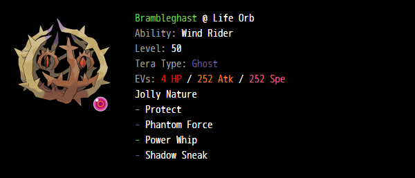

#01
i don't know what the typical opinion on this is, but i absolutely love the direction that game freak has taken with their pokemon designs. specifically, it feels like almost every pokemon this gen has either some unique move or unique ability. some of these aren't that good sadly (has anyone used double shock, like, ever?) but others are juuust good enough that i can shove them onto a team and have some fun with them.
so that's what i did. i looked through the new pokemon, found some funny combos and slapped them all onto one team. and now im writing this up about it because i want to!
here's that team. images are from the pokepaste.
the star of the show, grafaiai. i saw the move doodle and knew i was gonna love using this guy, even if i dont use him well. honestly, if i wanted to use him well i would've put a slaking on here, but spoiler: i didn't! because everyone runs slaking with this guy and i wanted to be different (i also just dont like slaking tbh).
without slaking doodle is just kind of a "i want your ability" move. it doesn't get that much use from me but its really fun when i do use it. hot tip: doodle intimidate for instant double intimidate
you might notice some other very weird move choices here. all will be clear soon.
note - in game i dont have the dark tera. this matters exactly 0% of the time.
tinkaton my beloved <3 definitely my favorite pokemon of this gen. well, either tinkaton or tinkatuff. i really don't know which i like more. what was i talking about again.
ok so tinkaton gets fake out which is nice, and gigaton hammer which is SO funny, but on top of all of that she also gets the ability own tempo! hooray for not being intimid- lmao thats not what im using it for
own tempo also prevents confusion! and if you look above tinkaton, you'll see prankster swagger. (for those unaware - swagger confuses the target but gives +2 atk. with own tempo its just a straight up +2 atk)
with a good fake out, you can potentially get +4 gigaton hammer turn 2. now, the trade off is that tinkaton is kinda slow, so there's a chance tinkaton dies. if you want to ensure tinkaton lives longer you could give her an assault vest, but i didn't feel like it. by which i mean i forgot to grab an assault vest in game. oh well, just don't put her in front of a flamethrower.
honestly at first i just put this pokemon on the team because i got a shiny of her. but she's actually so funny. if you look closely, you'll see i'm not running speed boost. really, that's just because i think opportunist is a really funny ability, and is even funnier with the addition of mirror herb. can you tell i like making teams that are fun but not good?
with opportunist + mirror herb, espathra actually works as a really good dondozo counter, copying the omniboost twice and using stored power to ohko. even funnier: send out grafaiai too, and prankster doodle unaware. look at me. i am the dondozo now.
of course, that's not all - remember grafaiai? i gave it flatter. flatter is like special swagger, but +1 spa instead of +2 (bulbapedia was wrong, and the page said +2 for a while. imagine my disappointment :c). by using flatter on an opposing physical attacker (preferably), you can both confuse the opponent and give espathra +2 spa. this is good if you send out espathra + grafaiai expecting dondozo, but they know what espathra does and send out different pokemon.
note - in game i dont have the fairy tera. instead i have psychic, which trades coverage for raw damage.
ok enough about grafaiai synergy! time for tailwind. not only is kilowattrel is the fastest tailwind setter in pokemon SV (excluding prankster murkrow :c), it also gets the wind power ability. im like 90% sure everyone else using this pokemon runs volt absorb, and while that is probably better, i find this more fun, especially in combination with the next pokemon.
other than that this is a really standard set and there isn't much to say. might not be worth keeping protect but oh well, i've gotten some use out of it

brambleghast is fun. wind power, specifically, is fun. i am considering a lilligant + brambleghast team with petal blizzard to proc wind power, but that's besides the point because tailwind also procs wind power and we have a kilowattrel.
the idea is to lead kilowattrel and brambleghast; unless there is a murkrow or a prankster taunt user on the other team, you'll probably be able to set up tailwind, which will let brambleghast go next with +1 atk. alternately, if there is a threat to brambleghast before the tailwind goes up, there's shadow force to hopefully do some amount of damage. depending on the threat maybe tera ghost will kill but i didn't do any calcs bc that's for nerds (i say as i write up an essay about a pokemon team)
brambleghast is also nice for if you predict a wind move to be used. unfortunately you have to learn the wind moves, but the big ones probably are tailwind, heat wave, icy wind, and, if you're against a rain team, hurricane.
really gyarados is just coverage. it also has the bonus of intimidate and tera ground earthquake. i end up using him way more than i'd expect for him not having any direct synergy with the rest of the team though.
and that's that! hopefully i did a good job of explaining the team, even if it's not really worth using. i hadn't played vgc online before making this team, and i got up to high great ball tier with a roughly even win/loss ratio, which is honestly pretty good considering i'm pretty sure a lot of the people i ran into were using rental teams they found online.
speaking of, here's the rental code: [2D6130]. i think it's already outdated because season 2 is around the corner but have fun!